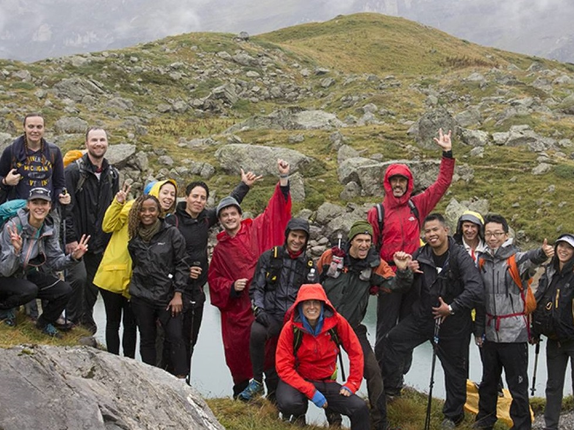

“Surfeaba a escondidas”
15 MAY 2017 - 8:01 CEST

Aitor Francesena (Zarautz, 1970) se acaba de proclamar campeón del mundo de surf en La Jolla, San Diego (California). Es ciego, no cree en el talento y ha corrido mucho para verlo todo.
¿Surfea desde muy niño?
Empecé con el skate. El surf era para gente de dinero y mis padres no se gastaban el dinero en tablas.
¿A qué se dedicaban?
Mi padre era tornero y mi madre trabajaba en una fábrica de conservas. No concebían el hecho de que hiciese surf porque era un deporte de riesgo. Yo de niño ya había perdido un ojo. Así que hacía surf a escondidas.
Al final no pudieron con usted.
Porque me puse a hacer tablas. Las primeras parecían submarinos de lo que pesaban. Pasé de tener prohibido a hacer surf a convertirse en algo fundamental en mi familia: comíamos según las mareas y mis abuelos del caserío me llevaban y traían las tablas. Y aquellos aldeanos que nunca bajaban a la playa, que le tenían pavor al mar, conocían y trataban la tabla con un mimo de la leche, mejor que cualquiera.
Usted tiene talento.
No, qué voy a tener.
¿Qué tiene entonces?
No creo en el talento. El talento es producto del trabajo. Un ejemplo: dos niños bajan a hacer surf y uno, con menos horas, lo hace mejor que el otro. Podría decirse que tiene más talento, ¿verdad? Pero el verano anterior los dos estuvieron en la playa, y uno de ellos jugaba con la arena y el otro miraba el mar. ¿Quién tiene el don?
¿Por qué le llaman Gallo?
Hace 40 años Zarautz se dividía en dos: la parte de la playa, en donde vivía la gente rica, y la de atrás. Para ir al cole cruzaba Zarautz por esa zona obrera hasta llegar a una calle en la que había punkis y malotes. Iba a buscar a un amigo y al llegar a su casa le gritaba por el patio interior: “Mateeeeeeo”. Y bajaban a toda hostia los punketas de cresta con unos cuchillos enormes, me ponían uno en el cuello y me decían: “Haz la gallina”. Así que yo me ponía a imitar a la gallina: “Clo-clo-clo-cloooo”. Y nada, pues gallo.
Usted nace con un glaucoma.
Cada tres meses tenía que ir al médico. Para ver si tenía presión en los ojos me apoyaban una aguja en la córnea. No podía con eso, me ponían la anestesia general. Cuando tocaba médico, me escondía entre la paja del caserío, me subía a un árbol... Montaba unos cristos que se ponía todo el pueblo a buscarme.
¿Cuándo sabe que se va a quedar ciego?
A los trece años perdí el primer ojo y pensé: “Al loro, que queda uno”. Pero eres un crío, pasas de todo. A los 25 me empezó a fallar el otro y ahí sí ya piensas que va en serio.
¿Y qué hace?
Correr. Me niego a tener novia, viajo por todo el mundo, compito en todos los continentes. Quiero verlo todo antes de no poder ver nada. Guardar las imágenes. Ver puestas de sol, montañas, el mar, la gente.
¿Por qué no iba a tener novia?
No podía tener nada serio: sólo quería correr. Hace años me encontré con una de las chicas que más he querido en el polideportivo de Zarautz, los dos en la bici estática. Ya estaba ciego, empezamos a hablar y le dije: “¿Te acuerdas de aquel día que te dije que tenía que correr?”. Y ella respondió que ahora lo entendía.
Vio nacer y crecer a su hija.
Lo hice. No hacerlo era uno de mis miedos, pero llegué, lo vi.
¿Cómo hace surf?
Escucho el mar antes de entrar y cuando entro voy sabiendo cómo está. El sonido informa de la fuerza que tiene, la altura de las olas y su dureza. Después pregunto si tira para la izquierda o la derecha. Cuando viene la espuma ya sé a qué distancia está y según la distancia me meto por debajo y paso la ola remando perfectamente.
¿Y en la tabla?
Un compañero avisa: ¡viene una ola! Empiezo a remarla y el compañero me dice: “3, 2, 1...” para darme la distancia que queda para tenerla encima. En cuanto noto la curva me pongo de pie y surfeo. Voy subiendo y bajando a pared, y en relación a la subida o bajada, y la verticalidad, ya empiezo a meter maniobras.
¿Cómo perdió el segundo ojo?
Tuve dos intentos de trasplante de córnea que no funcionaron. Cuando ya quedaba poco para el tercero, me caí de una ola con el ojo abierto e impactó contra el mar. Reventó todo, se abrió la córnea y salió el ojo para fuera. Un ojo es un reloj: si lo rompes saltan todos los muelles. Fue aquí, en Zarautz.